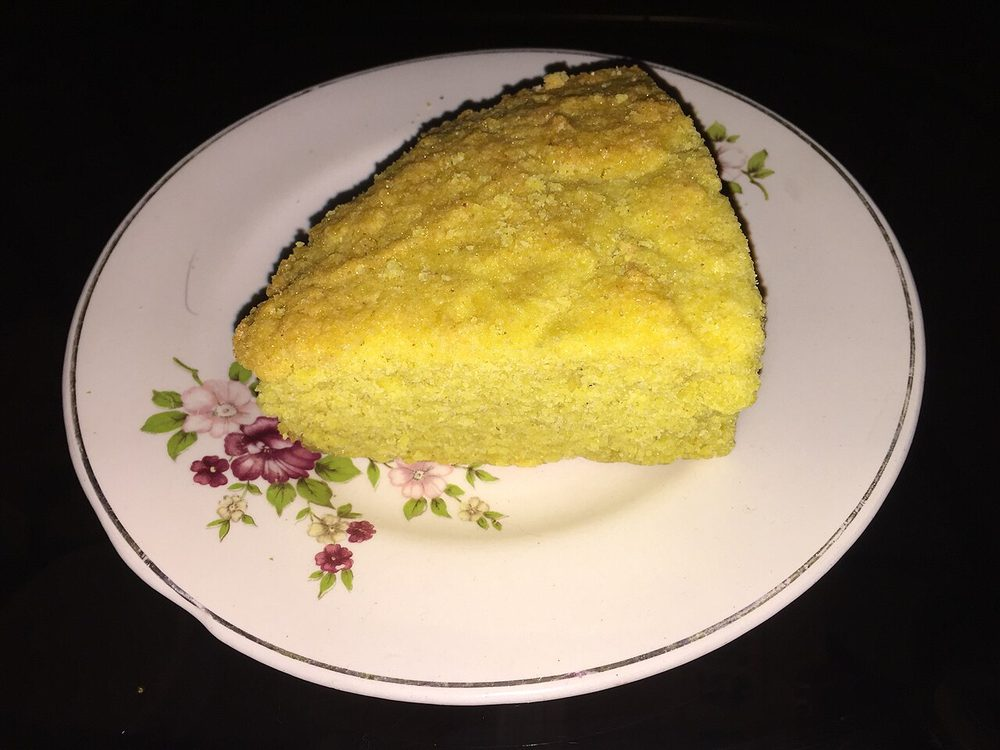

Start the day before. The chilling alone is 6 hr, against 80 min of actual work.
Contains: milk, gluten, egg
Ingredients
Quantities for 10.
- 2 cups fine semolina Rava
- 2 cups grated fresh Coconutfrozen grated coconut, thawed, is fine
- 1.5 cups Sugar
- 4, at room temperature Eggs
- 150g, melted and cooled Butterunsalted
- 150ml Milk
- 100ml thick Coconut Milkdeepens the coconut flavouroptional
- 1/2 tsp, ground Cardamomoptional
- 1/4 tsp, grated Nutmeg
- 1/2 tsp Baking Soda
- 1 tbsp, for the tin Ghee
- a pinch Salt
Cookware
oven
Checked against the ingredient list for ten allergens: milk, egg, fish, crustaceans, tree nuts, peanuts, sesame, mustard, soy and gluten. Brands vary, so read the label on anything new to you.
Before you start
- The batter must rest in the refrigerator at least 6 hours, and overnight is better. This is not optional: the semolina has to swell completely or the cake bakes gritty.
- Bring the eggs, milk and coconut to room temperature before mixing. Cold ingredients seize the melted butter into lumps.
- Baath is a Christmas kuswar sweet in Goan Catholic homes, but it is baked year round. It is meant to be dense and moist, not light. Do not expect a sponge.
Method
- Whisk the sugar into the melted butter until the mixture looks like wet sand, about 2 minutes.
- Beat in the eggs one at a time, then the milk and coconut milk, until smooth and pourable.
- Fold in the semolina, grated coconut, nutmeg, cardamom and salt. The batter will be thick and slightly grainy at this stage.
- Cover and refrigerate 6 hours or overnight. It will thicken considerably as the semolina drinks.If it has set too stiff to pour by morning, slacken it with 2-3 tbsp of milk, no more.
- Heat the oven to 170C. Grease a 20cm round tin with ghee and line the base with paper.
- Stir the baking soda through the rested batter and pour it into the tin, levelling the top with a spatula.Add the soda only at this point. Mix it in the night before and the lift is gone by morning.
- Bake 55-65 minutes until the top is deep golden brown and a skewer comes out with a few moist crumbs.Tent the top with foil at 40 minutes if it is browning faster than the centre is setting.
- Cool in the tin a full hour before turning out. The cake is fragile while warm.
- Cool completely, then cut into thin wedges or squares. It slices cleanly only when cold.
Safe temperatures: Egg dishes are done at 71°C / 160°F; a whole egg when the yolk and white are both firm. Reheat leftovers to 74°C / 165°F. FoodSafety.gov
Storage
Refrigerate it in an airtight tin, up to a week; there is egg and coconut in it and the counter-top keeping is traditional practice rather than anything we have tested. It settles and improves over the first two days either way. Bring it back to room temperature before eating.
Nutrition Good estimate
Low protein: 8 g a serving, 7% of the calories
| Per serving139 g | Per 100 g | |
|---|---|---|
| Calories | 467 kcal | 336 kcal |
| Protein | 7.8 g | 6 g |
| Carbohydrate | 58.1 g | 42 g |
| of which sugars | 31.8 g | 23 g |
| Fibre | 2.8 g | 2 g |
| Fat | 23.5 g | 17 g |
| of which saturated | 16.0 g | 12 g |
| of which unsaturated | 5.7 g | 4 g |
Estimated from raw ingredients using USDA FoodData Central.
More like this: No onion no garlic recipes · Goan recipes
Times, yields, allergens and nutrition are guidance. Use your own judgement on doneness and on storing. More in About.